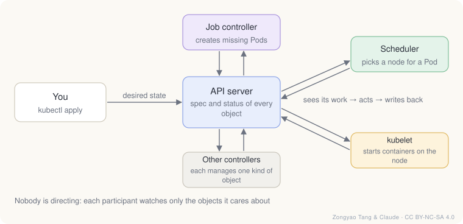
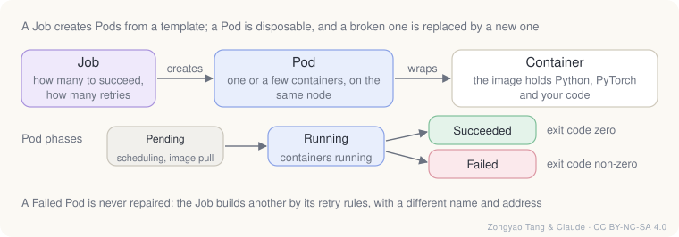
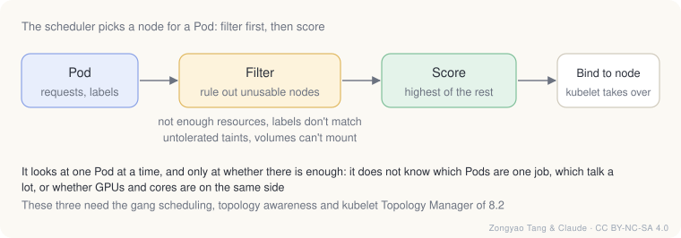

The thread: Kubernetes does not work the way you might think of "giving commands"; it is "write down a wish, and let it make it real" → the basic unit of a wish is the Pod, and what sees a Pod through to completion is the Job → which machine each Pod lands on is decided by the scheduler according to resources → containers are isolated, so data and checkpoints have to be connected in separately → finally, several Pods are made into one distributed training job. This unit does not aim to turn you into a Kubernetes administrator; the goal is to be able to read the definition of a training job, and to know where to look when it will not start or dies.
Part 8 · Clusters and platforms (optional)8.1 The core objects of Kubernetes
Translated by AI (Anthropic's Claude) from the Chinese edition. The Chinese original is the reference.
This unit answersOnce a training job is handed to Kubernetes, how does it become a set of processes running on several machines?
Follows the "cluster layer" of 0.1. Everything so far has been about the inside of a job; this part looks at the layer outside the job.
- Declarative: you describe the state you want, and controllers move reality towards it
- A Pod is the smallest unit that runs, and a Job sees it through to completion
- The scheduler chooses a machine for each Pod by its resource requests
- How data, checkpoints and configuration get into the container
- A distributed training job is a set of Pods that know each other
Explanation
1Declarative: you describe the state you want, and controllers move reality towards it
In Kubernetes you do not command it to "start this process on that machine"; you submit a description: "I want a set of containers like this running". The system has many programs called controllers, each watching one kind of description, constantly comparing "wanted" with "actual", and acting when they differ.

Every role deals only with the API server Some roles.
- *The API server.* The "registry" of the whole cluster. All descriptions (called objects or resources) are stored here. What you do with
kubectl apply -f job.yamlis hand a description to it. - *Controllers.* Many independent programs, each responsible for one kind of object. They read an object's desired state and actual state from the API server, make adjustments, and write the results back.
- *The scheduler.* A special controller: it picks a machine for each Pod that has not yet been assigned one.
- *The kubelet.* An agent running on every machine (called a node). When it sees "a Pod has been assigned to me", it starts the containers on its machine and keeps reporting their state.
The two halves of an object. Each object's description has two parts:
spec: written by you, the state you want.status: written by the system, the actual state.
A controller's job is to move
statustowardsspec.What happens when you submit a training job (details in the following cards):
- You submit a Job object, stating which image to run, what command, and how many resources it needs.
- The Job controller sees it, finds "there should be 1 Pod running, and there are 0", and creates a Pod object.
- The scheduler sees a Pod with no node assigned, chooses a node for it, and writes it into the Pod object.
- The kubelet on that node sees the Pod assigned to it, pulls the image and starts the container.
- The container runs and ends. The kubelet reports the result, and from it the Job controller decides whether the task is complete or needs a retry.
Nobody is directing this chain of actions. Each participant just watches the objects it cares about, and does what falls to it when it sees it.
The benefit of this design is exactly what 7.4 and case 4 of 11.1 need. When a machine breaks or a container crashes, the corresponding controller notices that "the actual state is wrong" and acts on its own (rebuilding the Pod). Self-healing is not an extra feature added on, but a natural result of this way of working.
What it means for troubleshooting. At any time you can ask the system: what state is this object in now, and what has happened to it recently.
kubectl get pods # list Pods and their status kubectl describe pod <name> # one Pod's detailed status and recent events kubectl logs <name> # the container's standard output kubectl get events --sort-by=.lastTimestamp # recent events in this namespace
These four commands answer most "what happened to my job" questions.
An analogyLike an air conditioner's thermostat: you do not tell it "cool for ten minutes now"; you set "26 degrees". It keeps measuring the temperature by itself, cools when too warm, stops when it gets there, and starts again if someone opens a window.
So when troubleshooting, the way of thinking has to change from "which command failed" to "which object's actual state differs from its desired state, and which controller failed to bring it into line". Each object records its state and the events that recently happened to it.
Builds on The same pipeline seen as six layers; each layer down speaks a different languageThe larger the scale, the more failures are the norm: one machine is reliable, thousands multiplied together are notSourcesKubernetes in Action §4: an object's spec and statusKubernetes in Action §4.3: controllers and eventsKubernetes docs: Cluster Components- *The API server.* The "registry" of the whole cluster. All descriptions (called objects or resources) are stored here. What you do with
- The two most basic kinds of object in the descriptions.
2A Pod is the smallest unit that runs, and a Job sees it through to completion
A Pod is one or a few containers running side by side, on the same machine and sharing a network address. The unit Kubernetes schedules, starts and terminates is the Pod. A Pod does not "start over" by itself: when it has ended, it has ended. A Job is a controller that manages Pods; it makes sure a given number of Pods run successfully to the end, and rebuilds them by its rules when they fail.
Containers. A container is an isolated process (with its child processes): it has its own file system (from the image), and its own view of processes and network. For training, the image holds Python, PyTorch, the CUDA libraries and your code. The same image run on any node gives the same environment.
(The GPU driver is an exception: it lives in the node's operating system, not in the image. The CUDA libraries in the container have to be compatible with the driver version on the node. Problems like "the new nodes are configured differently" in case 3 of 11.1 often have their root at this layer.)
Pods. Wrap one or a few containers together. They are always on the same node, share one network address, and can share some directories. The great majority of training Pods have only one main container. Each Pod has a phase:
Pending: not yet running. It may be waiting to be scheduled, or pulling the image.Running: the containers are running.Succeeded/Failed: the containers have ended, with an exit code of zero or non-zero.
A Pod is disposable. It is never "repaired" or "moved": if a node breaks, the Pods on it are gone, and what replaces them is a different, newly created Pod, with a different name and address.

How the three layers relate, and the phases a Pod goes through Jobs. A kind of controller for running "tasks that end" (as opposed to services that run indefinitely). Its description contains a Pod template, plus a few rules:
- How many Pods must complete successfully (
completions), and how many run at the same time (parallelism). - How many failed retries are allowed (
backoffLimit, 6 by default when not set). - Whether after a failure the container is restarted in place or a new Pod is created (
restartPolicyin the Pod template).
How this relates to training.
- *A retry runs the container's command from the start.* Kubernetes has no idea what "trained up to step so-and-so" means. A rebuilt Pod runs the start command again, and the training script itself has to check "is there a checkpoint, and if so carry on from it" (7.4).
- *Checkpoints have to live outside the container.* The container's file system disappears with the Pod. Checkpoints must be written to persistent storage mounted in (covered below).
- *A distributed job cannot restart just one process.* As 7.1 said, if one process is gone, the rest hang. So the failure policy of distributed training is usually "if any Pod fails, the whole group starts over". An ordinary Job cannot manage this "a group of Pods that stand or fall together" relationship; a higher-level object is needed (the last card of this unit). "Turning a hang into an exit" in case 4 of 11.1 relies on the settings at this layer.
Preemption and eviction. A Pod may also end for reasons that are not its own fault: the node needs maintenance, or a higher-priority job needs the resources. The Pod then first receives a termination signal, and is killed by force only after a grace period (30 seconds by default). The training script can catch this signal and use the grace period to save a checkpoint. This is how 7.4's "losing almost no progress when preempted" is achieved.
Two details that are easy to miss (both from the Kubernetes documentation):
- *The signal is sent only to the container's main process.* The documentation says the termination signal is sent to the main process in each container. If the start command is a layer of shell script, or
torchrunlaunches the training processes in turn, the process actually doing the training may not receive it. Make sure the signal is forwarded to the code that saves the checkpoint, or the grace period is just 30 seconds of waiting in vain. - *Preemption can be left out of the retry count.* A Job has a
podFailurePolicyfield, in which you can write a rule: Pods that failed because they were "disrupted" (carrying theDisruptionTargetcondition) do not count towardsbackoffLimit. Without it, a job preempted a few times in a low-priority queue will be judged failed because "retries are used up". Using this field requires the Pod template'srestartPolicyto beNever.
Reading the YAML of a training job
Below is the simplest training job on one machine with several GPUs. The field names come from Kubernetes' core interfaces; what your cluster actually uses may be a higher-level object (the last card), but the Pod template embedded in it is written the same way.
apiVersion: batch/v1 kind: Job metadata: name: gpt2-train spec: backoffLimit: 3 # retry at most 3 times template: # below is the Pod template spec: restartPolicy: Never # on failure, do not restart in place; the Job creates a new Pod containers: - name: trainer image: registry.example.com/team/train:1.4 command: ["python", "train.py", "--resume", "/ckpt"] resources: limits: nvidia.com/gpu: 8 # 8 GPUs (8.2) cpu: "64" memory: 512Gi volumeMounts: - {name: data, mountPath: /data, readOnly: true} - {name: ckpt, mountPath: /ckpt} - {name: shm, mountPath: /dev/shm} volumes: - name: data persistentVolumeClaim: {claimName: dataset-pvc} - name: ckpt persistentVolumeClaim: {claimName: ckpt-pvc} - name: shm emptyDir: {medium: Memory, sizeLimit: 64Gi} nodeSelector: nvidia.com/gpu.product: NVIDIA-H100-80GB-HBM3 tolerations: - {key: nvidia.com/gpu, operator: Exists, effect: NoSchedule}Match it section by section with earlier units:
--resumeincommand: a rebuilt Pod runs this command again, so it has to be able to carry on from a checkpoint (7.4).resources: this Pod wants 8 GPUs, 64 cores and 512 GB of memory. The scheduler finds a node by these (next card). Do not give too little CPU and memory: 2.4 explained that data loading needs CPU, 0.3 explained pinned memory. When only limits are written, requests default to equal them./dev/shm: a container's default shared memory is only 64 MB. 2.4 explained that DataLoader workers pass batches back to the main process through shared memory, and 6.2 that one of NCCL's transports inside a machine uses it too. Without mounting a bigger one, you get "bus errors" or DataLoader exiting for no apparent reason. This is the most classic pitfall of running training in containers.volumes: the dataset is mounted read-only; the checkpoint directory is writable, and still exists after the Pod disappears.nodeSelector: run only on nodes carrying this label (specifying the GPU model). Labels are applied automatically by the components covered in 8.2; the exact values depend on your cluster.tolerations: GPU nodes usually carry a "taint" that rejects Pods not declaring a toleration, so that ordinary tasks do not take up GPU machines.
What is not in this YAML but multi-machine training needs:
- The mechanism for several Pods to find each other (the last card).
- The settings that let the container use InfiniBand network cards (8.2). One of the reasons for "falling back to TCP" in case 3 of 11.1 is that there are no RDMA devices in the container.
- The limit on pinnable memory. Another reason in the same case.
An analogyLike workers and a foreman on a building site: the workers (Pods) do the actual work, and leave when it is done or when there is an accident. The foreman (the Job) is responsible for "this project gets finished", and if someone leaves partway, finds someone else to take their place.
So a training job's fault-tolerance policy is written at the Job layer: how many retries after failure, and where each retry starts from. What is rebuilt is a completely new Pod, and everything in the earlier container is gone, so checkpoints must be stored outside the container.
Builds on Declarative: you describe the state you want, and controllers move reality towards itA checkpoint must save four things: the model, the optimizer, progress, random stateThe birth of a batch: sampling, fetching samples, collating, pinning, onto the GPUUsed later in The scheduler chooses a machine for each Pod by its resource requestsWhen there are not enough GPUs: three ways to share one GPU, and preemptionSourcesKubernetes in Action chapter 17: JobsKubernetes in Action §6: termination and the grace periodKubernetes docs: JobsKubernetes docs: Pod Lifecycle- Once a Pod has been created, the first thing is to decide which machine it goes to.
3The scheduler chooses a machine for each Pod by its resource requests
Each Pod declares how much CPU, memory and GPU it needs. For each Pod waiting to be placed, the scheduler takes two steps: first filter out nodes that do not meet the conditions (not enough resources, labels that do not match, taints it cannot tolerate), then pick one of the remaining nodes by score. When no suitable node can be found, the Pod stays in Pending.
Nodes report what they have. Each node's kubelet reports its allocatable resources to the API server: how many CPU cores, how much memory, how many GPUs (8.2). Nodes also have labels (describing their attributes: machine type, GPU model, which rack) and taints (rejecting certain Pods).
Pods declare what they want. Two numbers:
requests: the basis for scheduling. The scheduler guarantees that the sum of requests of all Pods on a node does not exceed its allocatable amount.limits: the upper bound at run time. Going over on CPU gets you throttled; going over on memory gets the container killed (shown as "OOMKilled"; note this is main memory, a different matter from running out of GPU memory in 2.1).
For GPUs, requests and limits must be equal, and whole numbers. For training jobs, it is also advisable to make the two equal for CPU and memory: such a Pod belongs to the highest quality-of-service class (Guaranteed), is evicted last when resources are tight, and meets the precondition for the NUMA alignment covered in 8.2.
Choosing a node in two steps.
- *Filtering.* Rule out nodes that cannot be used: remaining resources less than the requests; labels that do not satisfy the Pod's
nodeSelectoror affinity rules; taints the Pod has not declared a toleration for; storage volumes the Pod needs that cannot be mounted on that node. - *Scoring.* Score the remaining nodes by a number of rules (how balanced resources are, affinity preferences and so on), and choose the highest.
Then the chosen node's name is written into the Pod object. That ends the scheduler's work; what follows is up to the kubelet on that node.

A Pod from submission to being bound to a node What the scheduler does not know. The default scheduler looks at one Pod at a time, and only at "whether there is enough". It does not know:
- That these 8 Pods are one job, and only make sense if started together (gang scheduling in 8.2).
- That the Pods of this job communicate heavily with each other, and should be placed on nodes close together on the network (5.3, topology awareness in 8.2).
- Inside a node, whether these 8 GPUs and these CPU cores are on the same side (5.1's NUMA, handled by the kubelet as 8.2 explains).
These three things are exactly what training jobs care about most, so GPU clusters usually add something on top of the default scheduler. The whole of 8.2 is about them.
Troubleshooting: a Pod stays Pending, or a job will not start
First look at the status, then at the events.
kubectl get pods -o wide # status, which node kubectl describe pod <name> # look mainly at the Events at the bottom
Pending, with
FailedSchedulingin the Events. The scheduler cannot find a node. The message states the reason directly, in a form like "0/40 nodes are available: 30 Insufficient nvidia.com/gpu, 10 node(s) had untolerated taint…". Read it as: of 40 nodes, 30 do not have enough GPUs, and 10 have a taint you have not tolerated. What to do in each case:Insufficient nvidia.com/gpu: no node has that many free GPUs. Note it means "a single node": a Pod wanting 8 GPUs needs 8 free on one node at the same time, and 20 scattered free GPUs across the cluster are no use.Insufficient cpu/memory: there are enough GPUs, but the CPU or memory on that node is taken by other Pods. This is very common, and easy to overlook.didn't match Pod's node affinity/selector: no node satisfies the labels innodeSelector. Check whether a label is misspelled:kubectl get nodes --show-labels.had untolerated taint:tolerationsmissing.- Messages about storage volumes: the PVC does not exist, is not yet bound, or can only be mounted in another availability zone.
Pending, with no
FailedScheduling, and a queueing system in use. The job may not yet have been admitted by the queueing system (8.2). Look at the status of the corresponding queueing object, not the Pod.Already assigned a node, but stuck at
ContainerCreating. The kubelet is preparing the container. Common Events:ErrImagePull/ImagePullBackOff: the image name is wrong, there is no permission to pull, or the image registry cannot be reached. Training images are often a dozen GB or more, and the first pull takes several minutes, which is normal.- Failure to mount a volume: a problem with the storage system.
Repeated
CrashLoopBackOff, or quickly turning toError. The container starts and then exits. What to look at here is the container's own output:kubectl logs <name> # output of the current run kubectl logs <name> --previous # output before the last crash
The output of
describealso has the reason for the last exit:OOMKilledmeans main memory went over the limits; exit code 137 usually means it was killed by force; other non-zero exit codes are the program's own errors.Running, but training makes no progress. Then it is no longer a Kubernetes problem; go back to the earlier units: are all processes there, are they stuck in collective communication (case 4 of 11.1). For multi-machine jobs, note: if one Pod is still Pending, the other Pods already Running wait for it while initialising NCCL, which looks like "everything is stuck". First confirm that all Pods are up.
These commands only read and never write, so they are safe to use.
An analogyLike booking a meeting room: first rule out those too small, those without a projector and those already booked, then pick the most suitable of the rest. If none is left, the meeting has to wait.
So "why won't my job start" is most often a scheduling problem: some resource request cannot be met on any single node. The scheduler writes the reason in the Pod's events.
- The container has been scheduled onto a machine and started. But it is an isolated environment, and what training needs is not inside it yet.
4How data, checkpoints and configuration get into the container
A container's own file system is temporary, and the same on every node. The three things training needs have to be connected in separately: the dataset (large, read-only), the checkpoint directory (which must outlive the Pod), and configuration and secrets. Kubernetes uses "volumes" to mount outside storage as a directory in the container.
The basic idea of volumes. A Pod's description lists some volumes, each saying "where the contents come from"; each container then says "mount which volume at which of my directories". Common sources:
- *Persistent volumes (requested through a PersistentVolumeClaim).* Storage that exists independently of the Pod and is still there after the Pod has gone. Behind it can be a network file system, a parallel file system, cloud block storage and so on.
- *
emptyDir.* An empty directory created and destroyed with the Pod, on the node's local disk or in memory. Suitable for temporary files and caches. The/dev/shmin the previous card's example uses the in-memory kind. - *
hostPath.* Uses a directory on the node directly. It gives access to the node's fast local disk, but if the Pod moves to another node, the earlier contents are no longer visible. - *ConfigMaps and Secrets.* Mount configuration files and secrets as files.
Three kinds of need.
*The dataset.* Large, read-only, read by many Pods at once. Usually kept on shared network storage and mounted "read-only, mountable in many places at once". Its read speed directly decides the first stage of the pipeline in 0.1. 7.4 explained the reason for packing small files into shards; 5.3 explained that reading data goes over the front-end network. If the shared storage is not fast enough, a common practice is to copy the data onto the node's local disk (
emptyDirorhostPath) when the job starts, and read locally after that.*Checkpoints.* Must be writable, persistent, and in multi-machine training accessible to all Pods. It has to be a persistent volume. Writing checkpoints in parallel as in 7.4 requires this volume to support several Pods writing at once (a parallel file system or object storage).
*Configuration.* Hyperparameter files, credentials for accessing data and the image registry.
Access modes. Persistent volumes have several access modes, and you have to choose the right one when requesting:
- Read-write by one node only: enough for saving checkpoints in single-machine training.
- Read-only by many nodes: suits datasets.
- Read-write by many nodes at once: the checkpoint directory of multi-machine training needs this, and not every storage system supports it.
With the wrong mode, the symptom is the second Pod failing to mount and sticking at
ContainerCreating.The connection to performance. Storage is the most easily overlooked stage of the pipeline in 0.1, because in the job's definition it is only a few lines of YAML. The symptoms when it goes wrong were all covered earlier:
- GPU utilisation in a sawtooth while the CPU is not busy: the workers are waiting for storage (2.4).
- Throughput dropping every fixed number of steps: checkpoints being written, with writing to disk blocking training, or squeezing the bandwidth for reading data (7.4).
- The same job slow by day and fast at night: other users on the shared storage.
An analogyLike a hotel room: the furniture is standard (the image), and after you check out everything goes back as it was. Your own luggage (data) you bring in; your valuables (checkpoints) go in a safe that is not emptied at check-out.
So in a training job's YAML, the volumes section decides three things: where data is read from and how fast; where checkpoints are saved and whether they can be found again after a restart; and whether several Pods can read and write the same thing at once.
Builds on The scheduler chooses a machine for each Pod by its resource requestsLarge-scale data loading: pack huge numbers of small files into shards, and read them sequentiallyDistributed checkpoints: each process saves its own, without making training stop and waitA training cluster has two networks: the front end for data and management, the back end only for RDMA between GPUsSourcesKubernetes in Action chapter 7: volumesKubernetes in Action: an emptyDir kept in memoryKubernetes in Action: access modes of persistent volumesKubernetes docs: VolumesKubernetes docs: Persistent Volumes- The examples so far were for one machine. Extending to several machines means solving a few more problems.
5A distributed training job is a set of Pods that know each other
In multi-machine training, each machine runs one Pod, and each Pod holds several training processes. Besides each starting up, they need three things: to know each other's addresses; to know their own number and how many there are in total; and to be scheduled, started and failed as a whole. These are provided by objects above the Job, such as Kubeflow's training jobs.
What multi-machine training needs at start-up. Recall 7.1 and 6.2:
- Each process needs to know its own number (rank) and the total number of processes.
- All processes need to be able to find the same "meeting point" to complete the initial handshake (the out-of-band handshake of 6.2). Usually the address where process 0 runs.
- After the handshake, NCCL itself discovers and sets up the connections that actually carry data (InfiniBand).
On bare metal, this is done by
torchrunormpirunwith a list of hosts. On Kubernetes, Pods' addresses are assigned dynamically and are not known in advance.Problem one: stable names. Kubernetes can give a set of Pods fixed, predictable network names (through a kind of Service that does no load balancing). So the name of "Pod 0" is settled when the job is submitted, and the other Pods can use it as the meeting point.
Problem two: telling each process who it is. When the training job's controller creates each Pod, it injects environment variables into it: the meeting point's address and port, the total number of processes, and this Pod's index. The start command in the container (
torchrunand the like) reads these variables. With MPI-style launching, a "launcher" Pod starts the processes inside the various "worker" Pods by remote execution.Problem three: standing or falling together. Two aspects:
- *Starting together.* When only some of the Pods have been scheduled, they sit on their GPUs waiting, able to do nothing. The gang scheduling of 8.2 solves this.
- *Failing together.* If any Pod fails, the rest should be terminated at once and the whole restarted. This is exactly the missing link in case 4 of 11.1: a process died, and the rest waited indefinitely.
Who does all this. Above the core Job there are a few layers of specialised objects:
- *JobSet.* Manages several Jobs as one whole, providing stable network names and a failure policy for the whole.
- *Kubeflow Trainer's training jobs.* A layer aimed at machine learning: you state which training runtime (PyTorch and so on), how many nodes, how many resources per node, and it generates the JobSet and Pods underneath, injecting the environment variables the framework needs. Its previous generation was a set of objects split by framework (PyTorchJob, for example), which many clusters still use.
To see which one your cluster uses, look at the
kindline of the YAML actually submitted. Whichever it is, expanded underneath there are Pod templates like the one two cards back.Process numbers and physical location. As 7.3 said: a parallel scheme assumes "which processes are on the same machine". On Kubernetes, this depends on how many processes each Pod holds, and how Pod indices map to ranks. The common arrangement is one Pod per node and 8 processes per Pod for 8 GPUs, with ranks numbered consecutively by Pod index. Then "8 adjacent ranks are on the same machine", and a tensor-parallel group can be placed inside the machine. Change to "one Pod per GPU", and the Pods of one job may be scattered over many nodes, so the assumption no longer holds.
An analogyLike a football team setting off for a match: it is not just sending 11 people to the ground separately. Each one has to know who their teammates are and what position they play; and with one person missing, the match cannot begin.
So what you submit is usually not a bare Job but a "training job" object. It creates a set of Pods for you, sets up the names and environment variables that let them find each other, and lays down "if one fails, all start over".
Builds on How data, checkpoints and configuration get into the containerMost of the work is done once at initialisation: probe the topology, build rings and trees, connect every pair of GPUsData parallelism: a full copy of the model on every GPU, each taking part of the dataForms of parallelism combined in layers by bandwidthSourcesKubernetes in Action §11.4 headless ServiceKubeflow Trainer overviewJobSet overviewPyTorch docs: torchrun
Putting it together
Kubernetes is declarative: you submit a description, and a variety of controllers keep adjusting reality to match it. A Pod is the smallest unit that runs, and a Job sees Pods through to completion and retries on failure. The scheduler chooses a node for each Pod according to the resources it requests. Data and checkpoints are mounted into containers through volumes. A distributed training job is a set of Pods, plus the network names and environment variables that let them find each other.
Test yourself
Without looking back at the explanation, say it in your own words.
- What does "declarative" mean in Kubernetes? How does it differ from running commands directly on a machine?
- What are a Pod and a Job? What happens after a Pod fails? What does this require of where checkpoints are stored?
- How does the Kubernetes scheduler choose a node for a Pod? What is the difference between resource requests and limits?
- What kinds of storage does a training job usually mount? Why can checkpoints not be written to the container's own file system?
- To run multi-machine training on Kubernetes, besides starting several Pods, what other problems have to be solved?